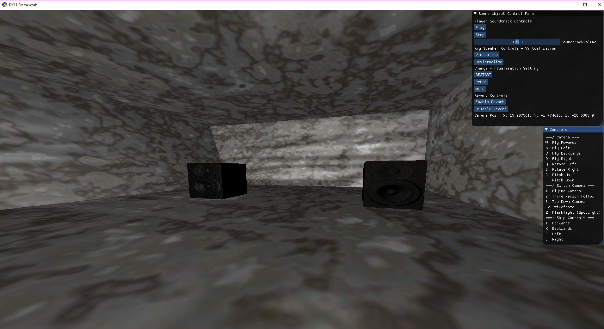
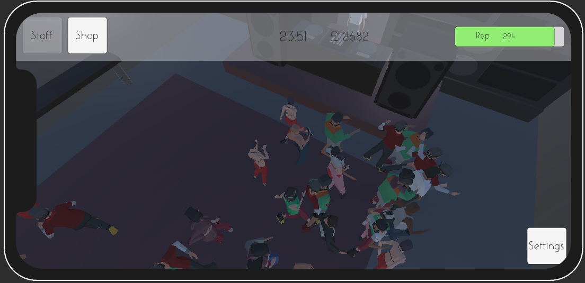
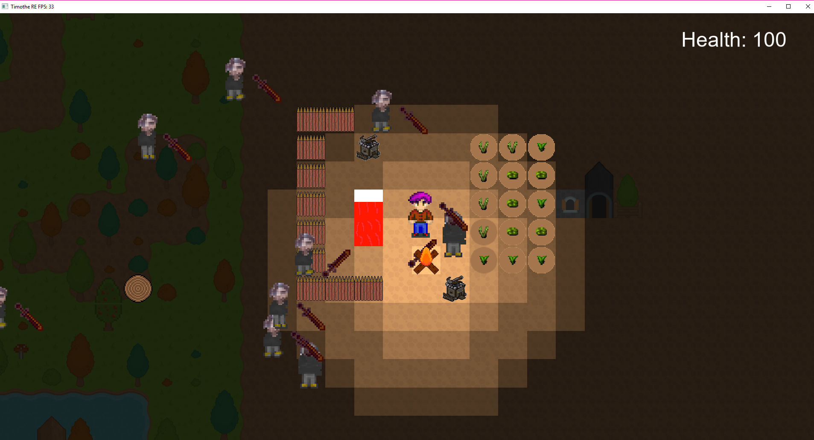
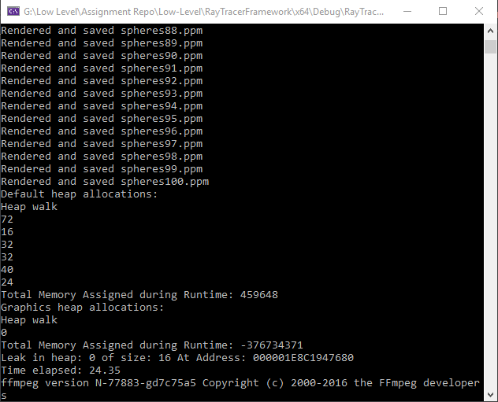
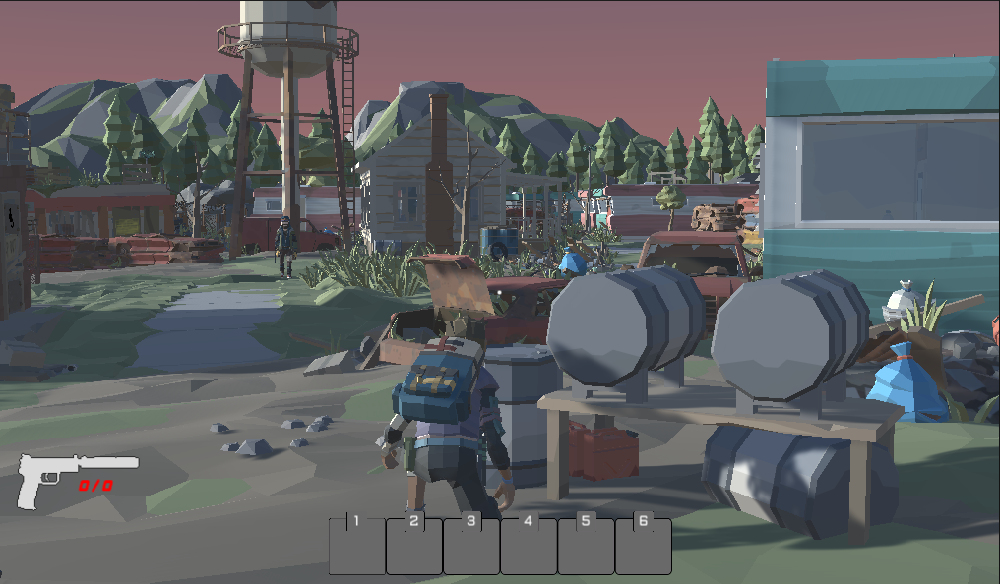
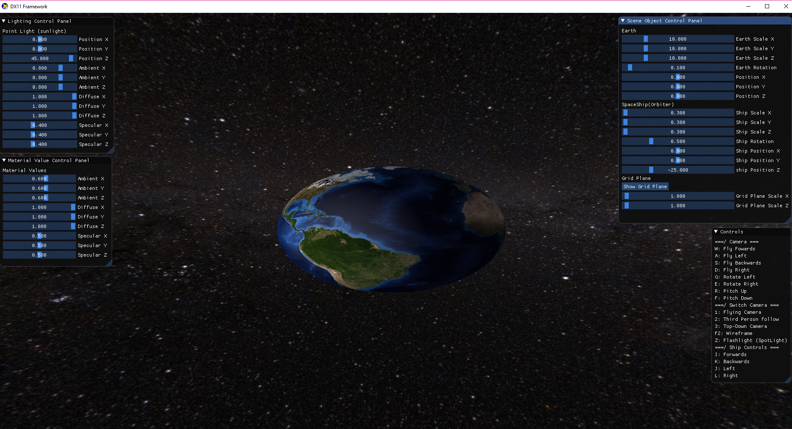
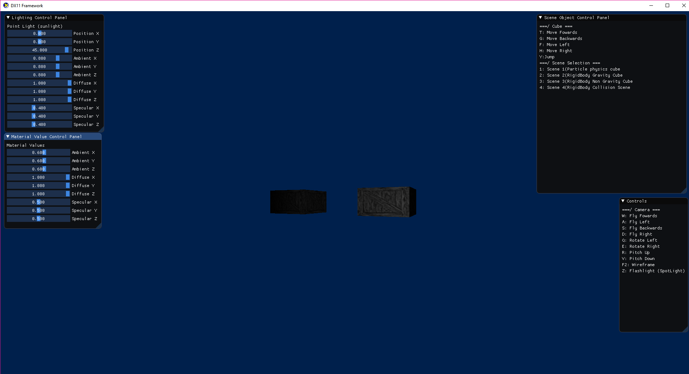
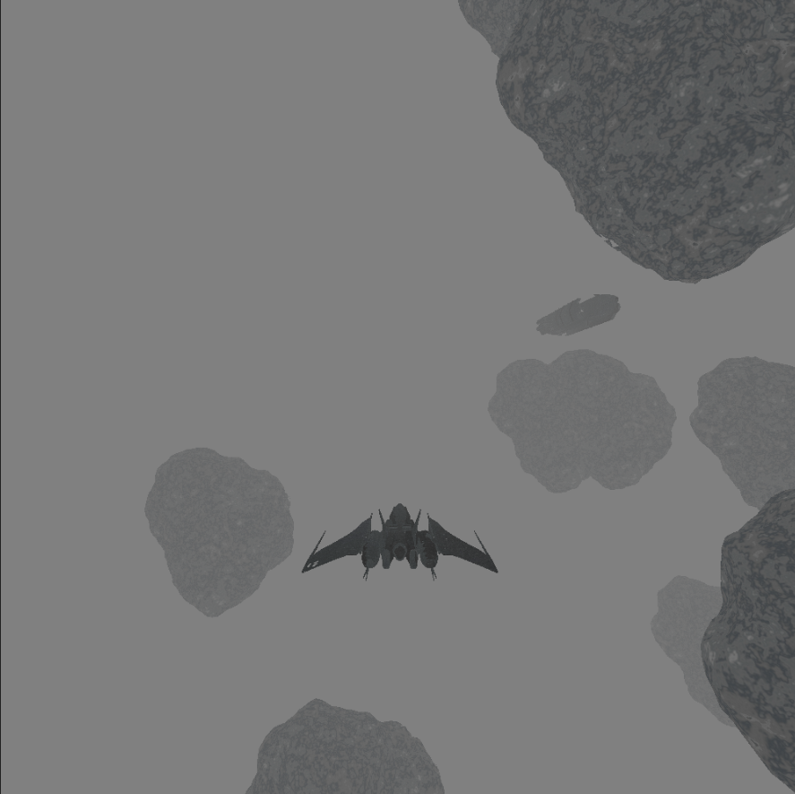

C++ State Machine Audio Engine(FYP)
My final year project was to research the history, algorithms, and techniques used throughout game audio. This was then applied to creating a modern audio engine for 3D games in C++ using the FMOD Core API, with state machine
architecture to ensure expandability and ease of use.
Venue Manager (Mobile Games Development)
The 3rd year module Mobile Games Development saw the designing, developing and evaluating of a mobile game with mobile considerations taken into account such as optimisation and monetization. I developed Venue Manager, a 3D club management game where
the player must expand and upgrade their venue through money earnt from guests, made in Unity.


Group Game Dev Project
In 3rd year we had a group work module where a game was to be made from scratch, beginning with creating the engine, then creating the game in that engine. For this,
we created a 2D game framework, and then built the game within it. My main contributions were the audio systems and various features for the game.
Low Level Games Programming
Low level games programming involved optimising ray tracer framework to achieve faster render times through structural changes, threading, memory management, and more efficient coding practices.
The framework was also ported to linux as a part of the criteria. New and delete operators were overridden for efficiency and control over memory managent.


The Roach Collector
In my second year, in the Technical Games Production module, me and the team I was working with developed The Roach Collector, a hardcore looting and survival game where if the player dies
in a run they lose all the gear they had on them. My main contributions to the project was the levels, gameplay features and the core idea of the game.
Further Graphics DirectX
The second year module Further Games and Graphical Concepts saw me develop a scene using DirectX in C++. Through this I gained experience with
graphical concepts and shader code, along with the basics of creating a game framework capable of using multiple objects and assets. The
framework also allowed control over the lighting and objects parameters through an ImGui UI.


C++ Physics Engine
In the second year Physics module I created a physics system within a directX framework. The system could handle multiple types of collision detection and collision resolution,
with 4 scenes showing its different use cases, from rigid body physics showing gravity, to two objects colliding and a resolution being visible

C++/SDL Mario
In my first year, semester 1 module Game Engine Creation I created a Mario Bros game in C++ utilising the SDL Library, the game had a selection of different levels, animated characters and the ability to make the game multiplayer at any time at the press of a key.
The levels would be progressed through by collecting every coin on the level and killing every enemy. This project build a strong foundation of my C++ skills and helped the progression onto my next uni project.
C++ OpenGL Space Scene
In my first year, semester 2 module Fundamentals of Game and Graphical System Development, our project was to make a scene in OpenGL. I created a deep space scene with a controllable spaceship to navigate and explore.
The scene contained a freighter ship that would jump into the scene upon loading in. Eeach asteroid had its position randomly generated and the scene utilised loading OBJ files and textures. This project was my introduction to 3D Graphical programming in
C++.


Duck Wars
Duck Wars was my final project for the developing computer games and computer games design module.
It was an overhead survival shooter with upgradable weapons, pickups and a random length game wich was a challenge
to play in the later stages. All models and code and some textures were created for the game by me and the game was created in Unity.
3D Modelling
For my final 3D modelling project in college I aimed to recrate the scene of a sort of safe location in an apocolyptic game world where one might survive a night inside an abandoned M113 millitary APC, making use of PBR textures, all of my own models and lighting.